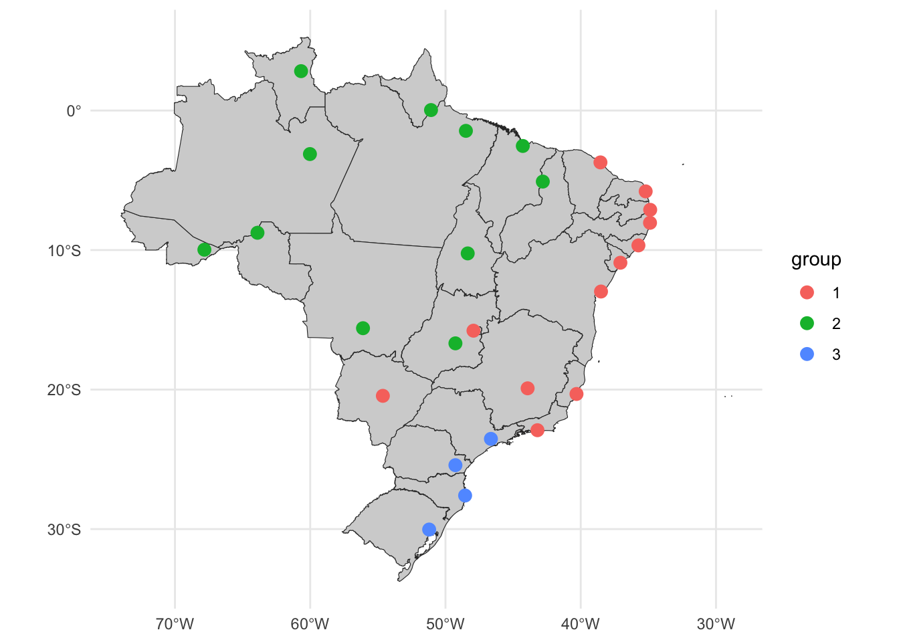
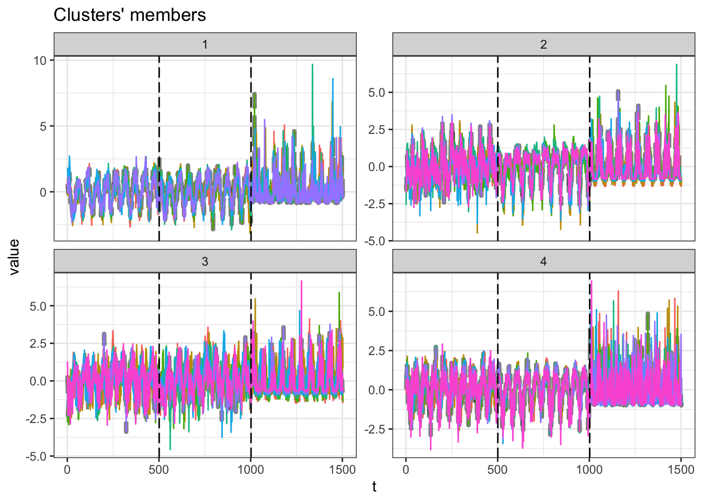

library(tidyr)
library(dplyr)
library(ggplot2)
library(timetk)
library(arrow)
library(dtwclust)
library(geobr)
library(sf)On this post we will try some strategies to cluster univariate and multivariate time series in R with the {dtwclust} package.
Packages
Let’s load some useful packages.
Data
States and capital general data
We will use some spatial data to plot the clustering results. The uf_sf contains the geographical boundaries from the Brazilian states.
uf_sf <- read_state(showProgress = FALSE)Using year 2010The cod_cap object (code folded bellow) is a data frame with Brazilian capitals name, codes and geographical coordinates.
Code
cod_cap <- data.frame(
name_muni = c("Porto Velho, RO", "Manaus, AM", "Rio Branco, AC",
"Campo Grande, MS", "Macapá, AP", "Brasília, DF",
"Boa Vista, RR", "Cuiabá, MT", "Palmas, TO",
"São Paulo, SP", "Teresina, PI", "Rio de Janeiro, RJ",
"Belém, PA", "Goiânia, GO", "Salvador, BA",
"Florianópolis, SC", "São Luiz, MA", "Maceió, AL",
"Porto Alegre, RS", "Curitiba, PR", "Belo Horizonte, MG",
"Fortaleza, CE", "Recife, PE", "João Pessoa, PB",
"Aracaju, SE", "Natal, RN", "Vitória, ES"),
code_muni = c(1100205, 1302603, 1200401, 5002704, 1600303,
5300108, 1400100, 5103403, 1721000, 3550308,
2211001, 3304557, 1501402, 5208707, 2927408,
4205407, 2111300, 2704302, 4314902, 4106902,
3106200, 2304400, 2611606, 2507507, 2800308,
2408102, 3205309),
lat = c(-8.760770, -3.118660, -9.974990,
-20.448600, 0.034934, -15.779500,
2.823840, -15.601000, -10.240000,
-23.532900, -5.091940, -22.912900,
-1.455400, -16.686400, -12.971800,
-27.594500, -2.538740, -9.665990,
-30.031800, -25.419500, -19.910200,
-3.716640, -8.046660, -7.115090,
-10.909100, -5.793570, -20.315500),
lon = c(-63.8999, -60.0212, -67.8243,
-54.6295, -51.0694, -47.9297,
-60.6753, -56.0974, -48.3558,
-46.6395, -42.8034, -43.2003,
-48.4898, -49.2643, -38.5011,
-48.5477, -44.2825, -35.7350,
-51.2065, -49.2646, -43.9266,
-38.5423, -34.8771, -34.8641,
-37.0677, -35.1986, -40.3128)
) %>%
st_as_sf(coords = c("lon", "lat"), crs = 4236)Climate data
We use climate data from the Brazilian capitals as example dataset. The parquet files are from the brclimr package and can be downloaded here.
1clim <- open_dataset(
sources = c("../../brclim/parquet/brdwgd/pr.parquet",
"../../brclim/parquet/brdwgd/tmax.parquet",
"../../brclim/parquet/brdwgd/tmin.parquet")
) %>%
2 filter(date >= as.Date("2011-01-01") &
date < as.Date("2021-01-01")) %>%
3 filter(name %in% c("pr_sum", "Tmax_mean", "Tmin_mean")) %>%
4 filter(code_muni %in% cod_cap$code_muni) %>%
5 collect() %>%
6 group_by(code_muni) %>%
7 arrange(date) %>%
8 pivot_wider(names_from = name, values_from = value) %>%
9 summarise_by_time(
.date_var = date,
.by = "week",
pr_sum = sum(pr_sum, na.rm = TRUE),
Tmax_mean = mean(Tmax_mean, na.rm = TRUE),
Tmin_mean = mean(Tmin_mean, na.rm = TRUE),
) %>%
10 pivot_longer(cols = c(pr_sum, Tmax_mean, Tmin_mean)) %>%
11 ungroup() %>%
12 arrange(code_muni, name, date)- 1
- Open parquet files without loading them to the memory.
- 2
- The parquet files contains daily data from 1961 to 2020. Let’s filter the most 10 years recent data.
- 3
- Those parquet files contains several zonal statistics, let’s keep only the precipitation sum and maximun and minimum temperature averages.
- 4
- Keep only data from the Brazilian capitals.
- 5
- Based on the filters above, load the remaining data into memory.
- 6
- Now we need to do some data manipulation per municipality.
- 7
- Order the municipality data per date.
- 8
- Pivot the data to wide format. The precipitation, maximum and minimum temperature data will form three columns, one for each.
- 9
-
We will use the
summarise_by_timefrom the {timetk}package to aggregate the daily data into weekly aggregates. This will help the clustering algorithm with a less noisy data. - 10
- Now we pivot the data back to the original long format.
- 11
- Ungroup the data.
- 12
- Arrange the data by municipality code, indicator’s name, and date.
Let’s take a look at the resulting dataset.
glimpse(clim)Rows: 40,581
Columns: 4
$ code_muni <int> 1100205, 1100205, 1100205, 1100205, 1100205, 1100205, 110020…
$ date <date> 2010-12-26, 2011-01-02, 2011-01-09, 2011-01-16, 2011-01-23,…
$ name <chr> "Tmax_mean", "Tmax_mean", "Tmax_mean", "Tmax_mean", "Tmax_me…
$ value <dbl> 32.08503, 30.86310, 31.73320, 29.87361, 30.09459, 30.67788, …Univariate clustering
First, we will cluster the Brazilian capitals based only on the maximum temperature data. We need to extract this specific data from the above dataset and prepare it to be used by the dtwclust package, which requires a matrix of time series.
1uclim <- clim %>%
2 filter(name == "Tmax_mean") %>%
3 arrange(code_muni, date) %>%
4 select(-name) %>%
5 pivot_wider(names_from = "code_muni", values_from = "value") %>%
6 select(-date) %>%
7 t() %>%
8 tslist()- 1
-
Load the
climdataset that was just created. - 2
- Filter the average maximum temperature data.
- 3
- Arrange the data by municipality code and date. This will be important as we will see later bellow.
- 4
- As we have only one indicator, we can remove the indicator name variable from the dataset.
- 5
- Pivot the dataset into wide format.
- 6
-
Now we remove the date variable, as the
{dtwclust}package functions will not use it. For this package, the time series is implicit by the sequence of the values. - 7
- Now we transpose the data. This will result in a matrix.
- 8
-
And now we coarce this matrix in a list of time series recognized by the
{dtwclust}package.
Let’s see the result.
glimpse(uclim)List of 27
$ 1100205: num [1:501] 32.1 30.9 31.7 29.9 30.1 ...
$ 1200401: num [1:501] 31.1 30 31 30.4 29.1 ...
$ 1302603: num [1:501] 33.1 30.8 32 29.8 30.8 ...
$ 1400100: num [1:501] 32.8 32.5 32.3 33 34 ...
$ 1501402: num [1:501] 29.7 32 31.8 30.3 30.4 ...
$ 1600303: num [1:501] 29.7 30.8 30.5 29.6 30.9 ...
$ 1721000: num [1:501] 30.6 31.4 30 30.8 27.6 ...
$ 2111300: num [1:501] 32.2 31.6 31 29.2 29.6 ...
$ 2211001: num [1:501] 32.6 32.6 32.2 31.9 31.2 ...
$ 2304400: num [1:501] 32.5 31.7 31 29.8 29.9 ...
$ 2408102: num [1:501] 30.7 29.6 29.9 29.6 29.8 ...
$ 2507507: num [1:501] 31 30.6 30.4 30.6 30 ...
$ 2611606: num [1:501] 30.2 30.2 30.6 30.3 29.7 ...
$ 2704302: num [1:501] 31.5 31.4 31.1 30.4 29.9 ...
$ 2800308: num [1:501] 32.4 32.5 31.8 32.3 31.3 ...
$ 2927408: num [1:501] 31 30.5 29.5 29.2 29.7 ...
$ 3106200: num [1:501] 21.6 26.2 27.7 30.4 29.9 ...
$ 3205309: num [1:501] 30.6 30.5 33.1 32.8 31.8 ...
$ 3304557: num [1:501] 28.2 30.9 32.8 33.8 35 ...
$ 3550308: num [1:501] 26.6 26.5 28.6 29.9 32.6 ...
$ 4106902: num [1:501] 24.3 27 27.3 27.5 30.2 ...
$ 4205407: num [1:501] 26.9 29.7 29.7 29 31.4 ...
$ 4314902: num [1:501] 30.1 32.3 30.6 30.6 32.5 ...
$ 5002704: num [1:501] 30.5 32.2 30.3 29.7 32.4 ...
$ 5103403: num [1:501] 30.2 32.5 31.5 30.6 32.3 ...
$ 5208707: num [1:501] 28.7 28 28.5 31.5 31.9 ...
$ 5300108: num [1:501] 25.1 24.9 26.8 29.1 28.9 ...The uclim object is list of vectors. Each element of the list is named with the municipality code and contains the time series of the average maximum temperature.
Now we will cluster the capitals based on the maximum temperature averagres using the tsclust function from the {dtwclust} package. This functions accepts several arguments variations and the package vignette reading is recommended.
We will cluster the municipalities from 2 to 10 groups partitions using the Soft-DTW algorithm.
uclust <- tsclust(
series = uclim,
type = "partitional",
k = 2:10,
distance = "sdtw",
seed = 13
)Now let’s check the validity indices of each $k$ cluster approach. The table bellow is sorted by the silhouette statistic.
names(uclust) <- paste0("k_", 2:10)
res_cvi <- sapply(uclust, cvi, type = "internal") %>%
t() %>%
as_tibble(rownames = "k") %>%
arrange(-Sil)
res_cvi# A tibble: 9 × 8
k Sil SF CH DB DBstar D COP
<chr> <dbl> <dbl> <dbl> <dbl> <dbl> <dbl> <dbl>
1 k_3 0.551 0 30.7 0.618 0.799 0.0331 0.0852
2 k_4 0.477 0 22.5 0.813 1.19 0.0610 0.0602
3 k_2 0.443 0 28.1 0.774 0.774 0.0202 0.276
4 k_5 0.398 0 21.0 0.937 1.48 0.0610 0.0564
5 k_6 0.390 0 16.5 0.831 1.73 0.133 0.0435
6 k_8 0.354 0 13.7 1.00 1.88 0.133 0.0378
7 k_7 0.285 0 15.1 0.982 1.48 0.0653 0.0414
8 k_9 0.248 0 14.0 0.795 2.08 0.0496 0.0274
9 k_10 0.109 0 9.32 1.05 4.05 0.0495 0.0432Considering the silhouette statistic, the \(k=3\) clustering results present the best results. Let’s plot the results from it.
u_sel_clust <- uclust[[res_cvi[[1,1]]]]
plot(u_sel_clust)
At this plot, each line is the time series of one capital. We see that partition #3 contains the smaller maximum averages values and partition $2 contains the higher maximum averages values. The table bellow tell us how many capitals are inside into each partition.
table(u_sel_clust@cluster)
1 2 3
12 11 4 Let’s see those results in a map. First we extract from the clustering result the labeled partitions and join it with the capitals metadata, and then plot the cluster partitions in a map
u_cluster_ids <- tibble(
code_muni = as.numeric(names(uclim)),
group = as.character(u_sel_clust@cluster)
) %>%
left_join(cod_cap, by = "code_muni") %>%
arrange(group, name_muni) %>%
st_as_sf()ggplot() +
geom_sf(data = uf_sf, fill = "lightgray", color = "grey20", size=.15, show.legend = FALSE) +
geom_sf(data = u_cluster_ids, aes(color = group), size = 3) +
theme_minimal()
Partition #1 contains some capitals from the north and central regions. The partition #2 is formed from some capitals from the northeast, southeast and central regions. Partition #3 contains the some capitals from the southeast and south regions.
Interesting to note that capitals from central regions are clustered together with capitals from the northeast considering only the average maximum temperature.
Multivariate clustering
Now we will cluster the Brazilian capitals based on more climate indicators, by using the precipitation, maximum and minimum temperature.
1mclim_g <- clim %>%
2 arrange(name, code_muni, date) %>%
3 group_by(code_muni) %>%
4 pivot_wider(names_from = "name", values_from = "value") %>%
5 mutate(across(c(pr_sum, Tmax_mean, Tmin_mean), ~ standardize_vec(.x, silent = TRUE))) %>%
6 select(-date)
7mclim <- group_split(mclim_g, .keep = FALSE) %>%
8 tslist(simplify = TRUE)
9names(mclim) <- group_keys(mclim_g)$code_muni- 1
-
Load the
climobject with all the data. - 2
- Arrange the values by indicator’s name, municipality code and date.
- 3
- Group the dataset to perform some manipulation on municipality level.
- 4
- Pivot the indicators to a wide format.
- 5
-
The clustering algorithms may be influenced by the magnitude and units of the indicators. We will standarize the values with the
standardize_vecfrom the{timetk}package. - 6
- Remove the date variable.
- 7
-
The
mclim_gobject is a grouped data frame. We will split it to list with thegroup_splitfunction, removing thecode_munivariable (keep = FALSEargument). - 8
- Then we coerce this to a time series list.
- 9
-
Finally, we update the list names with the municipality codes, which are the grouping keys from the
mclim_gintermediary object.
Let’s take a look at the first three list elements of the mclim object.
glimpse(mclim[1:3])List of 3
$ 1100205: num [1:501, 1:3] -0.159 -0.905 -0.374 -1.509 -1.375 ...
..- attr(*, "dimnames")=List of 2
.. ..$ : NULL
.. ..$ : chr [1:3] "Tmax_mean" "Tmin_mean" "pr_sum"
$ 1200401: num [1:501, 1:3] -0.222 -0.856 -0.276 -0.654 -1.371 ...
..- attr(*, "dimnames")=List of 2
.. ..$ : NULL
.. ..$ : chr [1:3] "Tmax_mean" "Tmin_mean" "pr_sum"
$ 1302603: num [1:501, 1:3] 0.473 -1.066 -0.276 -1.72 -1.079 ...
..- attr(*, "dimnames")=List of 2
.. ..$ : NULL
.. ..$ : chr [1:3] "Tmax_mean" "Tmin_mean" "pr_sum"Each object of the named list is a named matrix with the temperature and precipitation data.
We will use the same clustering function, but passing the multivariate list as series argument. Next, we will check the silhouette statistic from the different partition numbers.
mclust <- tsclust(
series = mclim,
type = "partitional", k = 2:10,
distance = "sdtw",
seed = 13
)names(mclust) <- paste0("k_", 2:10)
res_cvi <- sapply(mclust, cvi, type = "internal") %>%
t() %>%
as_tibble(rownames = "k") %>%
arrange(-Sil)
res_cvi# A tibble: 9 × 8
k Sil SF CH DB DBstar D COP
<chr> <dbl> <dbl> <dbl> <dbl> <dbl> <dbl> <dbl>
1 k_4 0.257 0 12.7 1.15 1.23 0.508 0.402
2 k_3 0.218 0 18.2 1.14 1.18 0.402 0.472
3 k_8 0.170 0 5.67 1.06 1.25 0.501 0.314
4 k_2 0.164 0 29.7 1.15 1.15 0.235 0.644
5 k_6 0.160 0 7.63 1.10 1.39 0.352 0.359
6 k_5 0.135 0 7.61 1.23 1.28 0.328 0.401
7 k_7 0.120 0 6.23 1.01 1.35 0.341 0.348
8 k_10 0.119 0 4.14 1.03 1.19 0.458 0.268
9 k_9 0.110 0 5.13 0.950 1.18 0.383 0.287\(k=3\) partitions present the higher silhouette statistic. Let’s plot it.
m_sel_clust <- mclust[[res_cvi[[1,1]]]]
plot(m_sel_clust)
The plot present the time series from each capital per partition. On each subplot there are three sections, one for each indicator (minimum temperature, maximum temperature and precipitation).
The table bellow shows how many capitals are inside each partition.
table(m_sel_clust@cluster)
1 2 3 4
6 7 7 7 Now, let’s plot these results in a map.
m_cluster_ids <- tibble(
code_muni = as.numeric(names(mclim)),
group = as.character(m_sel_clust@cluster)
) %>%
left_join(cod_cap, by = "code_muni") %>%
arrange(group, name_muni) %>%
st_as_sf()
m_cluster_idsSimple feature collection with 27 features and 3 fields
Geometry type: POINT
Dimension: XY
Bounding box: xmin: -67.8243 ymin: -30.0318 xmax: -34.8641 ymax: 2.82384
Geodetic CRS: Hu Tzu Shan 1950
# A tibble: 27 × 4
code_muni group name_muni geometry
<dbl> <chr> <chr> <POINT [°]>
1 2800308 1 Aracaju, SE (-37.0677 -10.9091)
2 2507507 1 João Pessoa, PB (-34.8641 -7.11509)
3 2704302 1 Maceió, AL (-35.735 -9.66599)
4 2408102 1 Natal, RN (-35.1986 -5.79357)
5 2611606 1 Recife, PE (-34.8771 -8.04666)
6 2927408 1 Salvador, BA (-38.5011 -12.9718)
7 3106200 2 Belo Horizonte, MG (-43.9266 -19.9102)
8 5300108 2 Brasília, DF (-47.9297 -15.7795)
9 5103403 2 Cuiabá, MT (-56.0974 -15.601)
10 5208707 2 Goiânia, GO (-49.2643 -16.6864)
# ℹ 17 more rowsggplot() +
geom_sf(data = uf_sf, fill = "lightgray", color = "grey20", size=.15, show.legend = FALSE) +
geom_sf(data = m_cluster_ids, aes(color = group), size = 3) +
theme_minimal()
The multivariate clustering result appears to be more interesting. The partition #1 is formed by the capital from the northeast, partition #2 with capitals from more central regions (except from Teresina in the north), partition #3 with capitals from the north, and partition #4 with capitals from the southeast and south capitals.
Session info
sessionInfo()R version 4.2.0 (2022-04-22)
Platform: aarch64-apple-darwin20 (64-bit)
Running under: macOS 14.0
Matrix products: default
BLAS: /Library/Frameworks/R.framework/Versions/4.2-arm64/Resources/lib/libRblas.0.dylib
LAPACK: /Library/Frameworks/R.framework/Versions/4.2-arm64/Resources/lib/libRlapack.dylib
Random number generation:
RNG: L'Ecuyer-CMRG
Normal: Inversion
Sample: Rejection
locale:
[1] en_US.UTF-8/en_US.UTF-8/en_US.UTF-8/C/en_US.UTF-8/en_US.UTF-8
attached base packages:
[1] stats graphics grDevices utils datasets methods base
other attached packages:
[1] sf_1.0-14 geobr_1.8.1 dtwclust_5.5.12 dtw_1.23-1
[5] proxy_0.4-27 arrow_13.0.0.1 timetk_2.9.0 ggplot2_3.4.4
[9] dplyr_1.1.3 tidyr_1.3.0
loaded via a namespace (and not attached):
[1] xts_0.13.1 lubridate_1.9.3 bit64_4.0.5
[4] httr_1.4.7 DiceDesign_1.9 tools_4.2.0
[7] utf8_1.2.4 R6_2.5.1 KernSmooth_2.23-22
[10] rpart_4.1.21 DBI_1.1.3 colorspace_2.1-0
[13] yardstick_1.2.0 nnet_7.3-19 withr_2.5.2
[16] tidyselect_1.2.0 curl_5.1.0 bit_4.0.5
[19] compiler_4.2.0 flexclust_1.4-1 cli_3.6.1
[22] shinyjs_2.1.0 labeling_0.4.3 scales_1.2.1
[25] classInt_0.4-10 tune_1.1.2 stringr_1.5.0
[28] digest_0.6.33 rmarkdown_2.25 pkgconfig_2.0.3
[31] htmltools_0.5.7 parallelly_1.36.0 lhs_1.1.6
[34] fastmap_1.1.1 htmlwidgets_1.6.2 rlang_1.1.2
[37] rstudioapi_0.15.0 shiny_1.7.5.1 farver_2.1.1
[40] generics_0.1.3 zoo_1.8-12 jsonlite_1.8.7
[43] magrittr_2.0.3 modeltools_0.2-23 Matrix_1.5-4.1
[46] Rcpp_1.0.11 munsell_0.5.0 fansi_1.0.5
[49] GPfit_1.0-8 lifecycle_1.0.4 furrr_0.3.1
[52] stringi_1.8.1 yaml_2.3.7 MASS_7.3-60
[55] plyr_1.8.9 recipes_1.0.8 grid_4.2.0
[58] parallel_4.2.0 listenv_0.9.0 promises_1.2.1
[61] ggrepel_0.9.4 lattice_0.22-5 splines_4.2.0
[64] knitr_1.45 pillar_1.9.0 dials_1.2.0
[67] future.apply_1.11.0 reshape2_1.4.4 codetools_0.2-19
[70] parsnip_1.1.1 stats4_4.2.0 glue_1.6.2
[73] evaluate_0.23 rsample_1.2.0 data.table_1.14.8
[76] RcppParallel_5.1.7 vctrs_0.6.4 httpuv_1.6.12
[79] foreach_1.5.2 gtable_0.3.4 purrr_1.0.2
[82] clue_0.3-65 future_1.33.0 assertthat_0.2.1
[85] xfun_0.41 gower_1.0.1 mime_0.12
[88] prodlim_2023.08.28 xtable_1.8-4 e1071_1.7-13
[91] RSpectra_0.16-1 later_1.3.1 class_7.3-22
[94] survival_3.5-7 timeDate_4022.108 tibble_3.2.1
[97] iterators_1.0.14 hardhat_1.3.0 units_0.8-4
[100] cluster_2.1.4 lava_1.7.3 workflows_1.1.3
[103] timechange_0.2.0 globals_0.16.2 ellipsis_0.3.2
[106] ipred_0.9-14